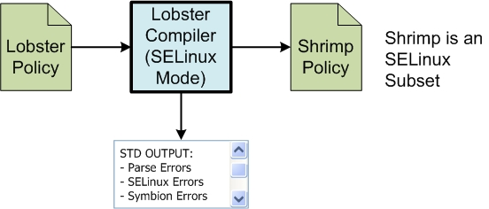

Lobster compiler
Navigation: Home
> Lobster
Compiler
Purpose
The Lobster DSL compiler can be used to generate policies for SELinux
systems. The Lobster compiler will first run any embedded symbion tests
and report errors found. If no symbion errors are found, the compiler
will generate code that is in "Shrimp" format - a specific variation of
the SELinux reference policy format that can be analyzed by the Shrimp
tool set created as part of the Policy DSL project. The Shrimp
format does not have the hierarchy found in lobster as all of the
domains have been flattened.
Invoking Lobster Compiler
The Lobster Compiler has been split into 3 executable files:
- lobster-selinux - run the lobster parser, symbion, and generates
selinux compatible output files
- lobster-xsm - runs the lobster parser, Symbion, and generate Xen
policy compatible output files
- lobster-validate -runs the lobster parser and symbion only.
Each of these files takes the same lobster arguments:
[executable][-I
include.lsr] [-o module] input.lsr ...
-I include.lsr --include=include.lsr Include
a lobster file
include.lsr
-o module
--module=module
Set
the name of the output module
[executable] is one of
"lobster-selinux", "lobster-xsm", or "lobster-validate". Note
that the -o & --module switch is ignored for the lobster-validate
case.
Alternatively, a 'lobster' shell script as been created with associated
switches
for each executable. If your path variable points to the bin
directory of this release, it should property run the executable
desired. The format is:
lobster
[-I include.lsr] [-o module] input.lsr ...
-I include.lsr --include=include.lsr Include
a lobster file
include.lsr
-o module
--module=module
Set
the name of the output module
--validate
Run the compiler and
Symbion only
--selinux
compile,
symbion, then
generate selinux output
--xsm
compile, symbion, the generate Xen
security module
output
Switch Notes
The -I option is provided to simplify Lobster development.
The user can create a file with "class definitions" which are
referenced by the -I option, while using these class definitions in
multiple different lobster files.
The -o option defines the module name being output, which is also the
name of the file prefix being output. If not included the default
name of "module" is used.
--selinux is used to generate SELinux policy compatible with the
reference policy.
--xsm is used when generating Xen VM policies which have slight
variations from the standard SELinux policy.
--validate is useful when designing "goal" policies or beginning the
initial policy design as it doesn't include the position=subject,object
checks required for selinux or xsm.
Workflows Illustrated
Lobster compilation generates shrimp output files from a Lobster policy
file. The compiler will also generate parsing errors, symbion
errors, and errors related to the output format chosen. Figure 1
illustrates compilation of a lobster policy into an SELinux Shrimp
Policy. Lobster can also geneate Xen compatible SELinux using the
--xsm switch.

Figure 1: Lobster Compiler Workflow
- Parses the policy file and identifies the first error in syntax
- Analyzes the policy file for information flow problems and checks
for problems with mismatch of 'type' property values. For SELinux
compilation, all ports must have a 'type' property with values of
'subject' and 'object' ports can only connect 'subject' to
'object' ports. Same type connections will result in an error message
- Runs Symbion assertions to verify that the information flows are
correct. errors are reported to standard error..
- Generate the Shrimp files.
Another option is top create a Lobster DSL which is a goal policy - a
policy used to understand what is possible independent of a specific
implementation. This policy can be checked for information flow
using the compiler, visualized using lviz, and checked with Symbion
checks using the lobster compiler in --validate mode. Later, a
goal policy can be used to generate a realizable policy through the
normal compilation steps but filling in more detail. Comparison
of the goal policy against the specific implementation should be the
final check in this process - potentially future Policy DSL tools will
allow for automatic comparison and visualization of the differences.
Technical Papers